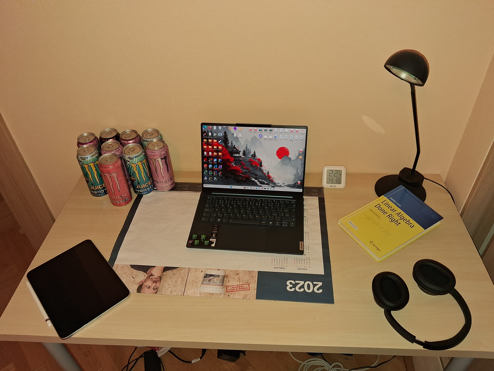

Moje pracovné prostredie
Toto je moje pracovné prostredie, ktoré používam pri štúdiu.

Notebook
Notebook využívam pri učení a programovaní zadaní. Súvisí najmä s webovými technológiami a softvérovým inžinierstvom.
Slúchadlá
Bezdrôtové slúchadlá používam pri učení a sústredenej práci.
Monster Energy
Spríjemnenie dňa pri skorom vstávaní.
Tablet
Tablet využívam na ručné písanie poznámok a riešenie úloh.
Kniha
Knihu používam ako dodatočný študijný materiál k lineárnej algebre.